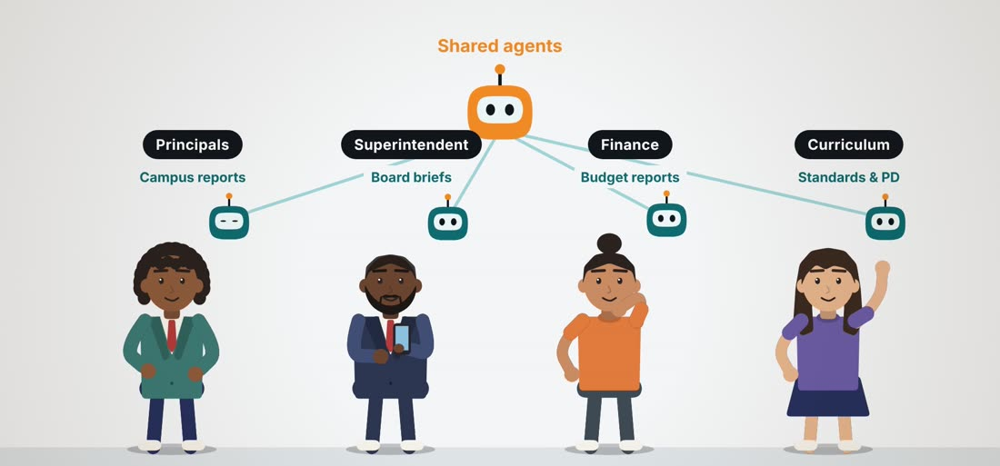
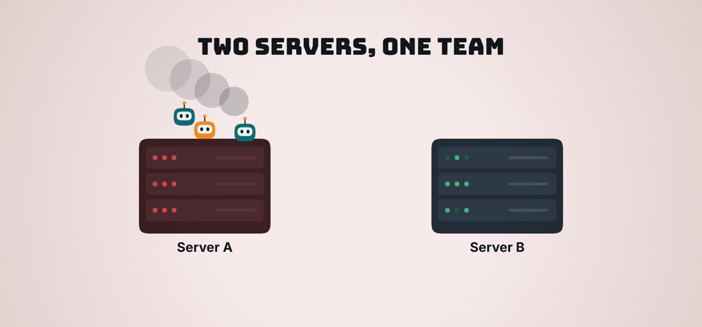

Principals
- Parent letters and newsletters
- Attendance and discipline summaries
- Walkthrough and observation notes
A district-owned server cluster that gives principals, the superintendent, finance and curriculum leaders their own AI agents, powered by the most capable AI models available. The same hardware hosts district web apps, and it keeps running when a machine fails.
Three new servers plus a cushion for price changes. Inside the $10K–$20K budget. The only ongoing cost is a shared, capped AI usage pool.
Each leader gets agents that carry out multi-step work. Shared agents serve the whole leadership team. Leaders review and approve everything an agent drafts.

From the video: every leader has their own agent, and shared agents serve the team.
The agents live on our servers. The reasoning is done by frontier models such as Claude and GPT, so the district does not buy AI hardware now. One shared usage pool with hard spending limits keeps the monthly cost predictable.
One physical machine runs many separate virtual servers, each with its own job. A new app means a new virtual server, not a new box.
Every file is written to two drives inside the same server at once. If one drive dies, nothing is lost and the server keeps running.
The servers copy each other's work every few minutes. If one stops, its work restarts on the other within minutes, losing at most the last few minutes of changes.
A third machine casts the deciding vote, so both servers never run the same work at once. This is what makes automatic takeover safe.
The same third machine keeps nightly restore points on separate drives, so an accidental deletion or a bad update can be rolled back.

From the video: when Server A fails, its agents restart on Server B within minutes. Updates work the same way: work moves to the twin, the server is updated, and the work moves back, so staff never wait on a maintenance window.
Runs agents and web apps.
An identical twin. Shares the load day to day and takes over if Server A fails.
Nightly backups and the deciding vote.
| One-time cost | Amount |
|---|---|
| Two compute servers | $13,008.06 |
| Backup + referee server | $5,057.43 |
| Hardware today | $18,065.49 |
| Cushion for price changes (9.8%) | $1,764.51 |
| Total request | $19,830.00 |
Two prices moved since the proposal: each 1200W power supply is $10 higher, and the backup server's cooler now includes $18.22 shipping. The cushion absorbs both, so the request stays at $19,830. Tax and most shipping are not included.
Either way, the cost is one shared district budget for the agents the group uses, not a separate bill for every person.
The district prepays credits with each AI company: Anthropic for Claude, OpenAI for GPT, xAI for Grok. Every agent and app draws from that shared pool.
A paid account such as ChatGPT or SuperGrok is linked to an agent by signing in with that account (OAuth). No API key is needed.
Start with a pooled API budget for shared agents and district apps. Add district-paid subscription accounts only for individual leaders whose own agents need heavy daily use, after checking each plan's terms.
Two AI graphics cards in one server let leaders run AI on student records without anything leaving the district, and move routine work off paid cloud models.
Every part, quantity, price and buy link in one list.